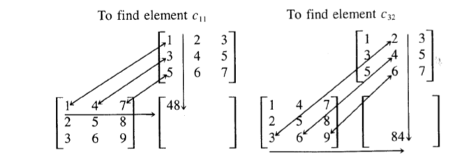
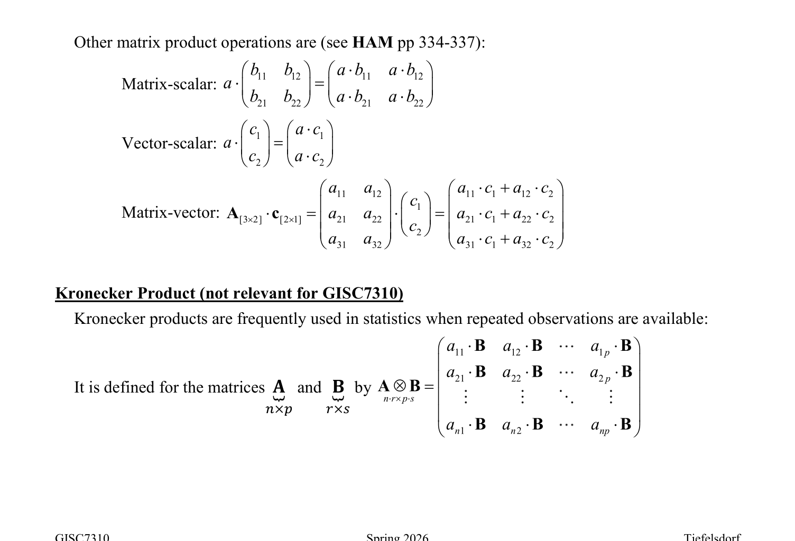
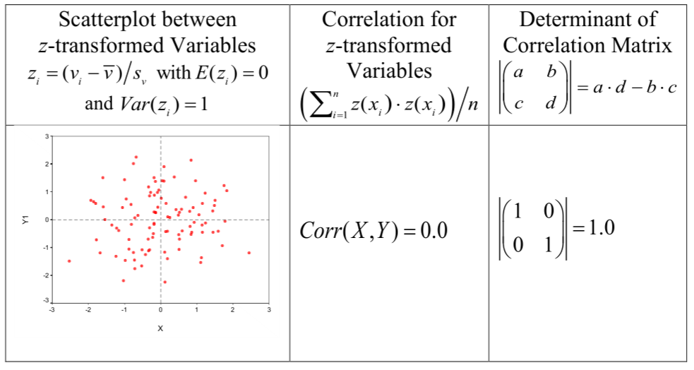
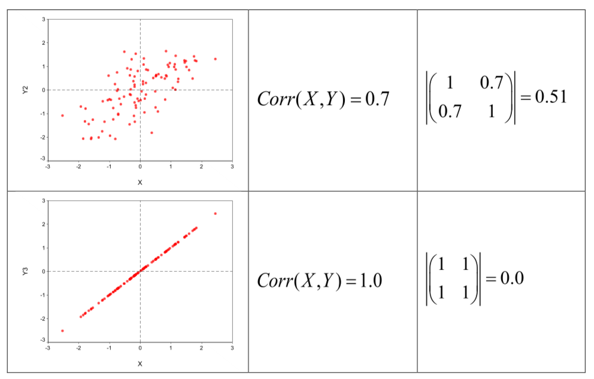

Week05: Matrix Algebra and Eigensystems
1 Matrix Algebra
Progression in notation:
Scalars (lower case italics): \(\underset{1 \times 1}{a}\) are single numbers
Vectors (lower case bold): \(\underset{n \times 1}{\mathbf{a}} \equiv \begin{pmatrix} a_1 \\ \vdots \\ a_n \end{pmatrix}\) are n scalars arranged in a column (Caution: some older books define a vector as a row of numbers)
Matrices (upper case bold): \(\underset{n \times m}{\mathbf{A}} \equiv \begin{pmatrix} a_{11} & a_{12} & \cdots & a_{1m} \\ a_{21} & a_{22} & \cdots & a_{2m} \\ \vdots & \vdots & \ddots & \vdots \\ a_{n1} & a_{n2} & \cdots & a_{nm} \end{pmatrix}\) is combination of m single vectors, that is, \(\underset{n \times m}{\mathbf{A}} \equiv [\mathbf{a}_1 \,|\, \mathbf{a}_2 \,|\, \ldots \,|\, \mathbf{a}_m]\), of length n.
Notes:
in statistics the rows are usually associated with the observations and the column with the variables
the intersection \(a_{ij}\) of the \(i^{th}\) row with the \(j^{th}\) column is called a cell or component.
Sometimes the dimension \(\#rows \times \#columns\) of a matrix or a vector are written below their symbols by to aid understanding of matrix operations.
internally a computer stores a matrix sequentially in an array of memory cells \([\,\cdot\,]_k\) such as \([a_{11}]_{k=1}, [a_{21}]_{k=2}, \ldots, [a_{n1}]_{k=n}, [a_{12}]_{k=n+1}, \ldots, [a_{nm}]_{k=n \cdot m}\) where the index function \(k(i,j) = i + (j-1) \cdot n\) points to the memory cell. By convention, the first index \(i\) cycles through the matrix the fastest.
1.1 Elementary matrix operations:
Transpose:
Transposition changes a column vector into a row vector
\[\underset{n \times 1}{\mathbf{a}^T} \equiv \underset{1 \times n}{\left(a_1, a_2, \ldots, a_n\right)}.\]
Transposition is usually denoted by a prime (\('\)) or a capital (\(T\)) in the exponent of a matrix or a vector. The capital superscript (\(^T\)) is preferred because the prime can be confused with the derivative.
To save print space while typesetting a vector it is sometimes written in the literature as
\[\underset{n \times 1}{\mathbf{a}} = \left(a_1, a_2, \ldots, a_n\right)^T\]
A transposed matrix is given by
\[\underset{m \times n}{\mathbf{A}^T} \equiv \begin{pmatrix} a_{11} & a_{21} & \cdots & a_{n1} \\ a_{12} & a_{22} & \cdots & a_{n2} \\ \vdots & \vdots & \ddots & \vdots \\ a_{1m} & a_{2m} & \cdots & a_{nm} \end{pmatrix}_{m \times n}.\]
The i-th row becomes the i-th column or the j-th column becomes the j-th row. The \(a_{ij}^{\text{th}}\) component becomes the \(a_{ji}^{\text{th}}\) component.
Note: Transposed matrices do not need to be stored in the new format in the memory, just the indexing algorithm of the memory cell pointer function \(k\) is revised.
Matrix Addition and Subtractions:
Matrix addition/subtraction:
\[\mathbf{A}_{[3 \times 2]} \pm \mathbf{B}_{[3 \times 2]} = \begin{pmatrix} a_{11} & a_{12} \\ a_{21} & a_{22} \\ a_{31} & a_{32} \end{pmatrix} \pm \begin{pmatrix} b_{11} & b_{12} \\ b_{21} & b_{22} \\ b_{31} & b_{32} \end{pmatrix} = \begin{pmatrix} a_{11} \pm b_{11} & a_{12} \pm b_{12} \\ a_{21} \pm b_{21} & a_{22} \pm b_{22} \\ a_{31} \pm b_{31} & a_{32} \pm b_{32} \end{pmatrix}\]
Note both matrix dimensions must match.
Vector-Vector Multiplication:
Let \(\underset{n \times 1}{\mathbf{a}}\) and \(\underset{n \times 1}{\mathbf{b}}\) be two vectors with matching dimensions
In order perform vector by vector multiplication the inner dimensions of the left-hand and right-hand vectors must match. The outer dimensions of the left-hand and right-hand vectors give the dimensions of the results.
Thus
\[\underset{1 \times n}{\mathbf{a}^T} \cdot \underset{n \times 1}{\mathbf{b}} = \sum_{i=1}^{n} a_i \cdot b_i = \underset{1 \times 1}{c} \quad \text{is a scalar and called \textit{\textbf{inner product}}}\]
\[\underset{n \times 1}{\mathbf{a}} \cdot \underset{1 \times m}{\mathbf{b}^T} = \begin{bmatrix} a_1 \cdot b_1 & a_1 \cdot b_2 & \cdots & a_1 \cdot b_m \\ a_2 \cdot b_1 & a_2 \cdot b_2 & \cdots & a_2 \cdot b_m \\ \vdots & \vdots & \ddots & \vdots \\ a_n \cdot b_1 & a_n \cdot b_2 & \cdots & a_n \cdot b_m \end{bmatrix}_{n \times m} \quad \text{is an } n \times m \text{ matrix called the \textit{\textbf{outer product}}.}\]
Here the dimensions \(n\) and \(m\) do not need to match.
\[\underset{1 \times n}{\mathbf{a}^T} \cdot \underset{n \times 1}{\mathbf{a}} = \sum_{i=1}^{n} a_i^2 \quad \text{is always positive (if at least one } a_i \neq 0\text{)}\]
The vector products \(\underset{n \times 1}{\mathbf{a}} \cdot \underset{n \times 1}{\mathbf{b}}\) and \(\underset{n \times 1}{\mathbf{b}} \cdot \underset{n \times 1}{\mathbf{a}}\) are not defined because of mismatching dimensions.
Matrix-matrix multiplication:
Both matrices must have conforming inner dimensions. The resulting matrix inherits the row dimension of the left-hand matrix and the column dimension of the right-hand matrix.
Thus: \(\underset{n \times p}{\mathbf{A}} \cdot \underset{p \times m}{\mathbf{B}} = \underset{n \times m}{\mathbf{C}}\)
Therefore, \(\underset{n \times p}{\mathbf{A}} \cdot \underset{q \times m}{\mathbf{B}}\) is not defined because the inner dimensions are not conforming.
A component \(c_{ij}\) of the product matrix \(\mathbf{C}\) is given by the inner product of \(i^{\text{th}}\) row of \(\mathbf{A}\) with the \(j^{\text{th}}\) column of \(\mathbf{B}\), i.e.,
\[c_{ij} = \sum_{k=1}^{p} \underbrace{a_{ik}}_{i^{th}\text{ row element}} \cdot \underbrace{b_{kj}}_{j^{th}\text{ column element}}\]
Alternatively, one can write the matrix product as a sum of outer products:
\[\underset{n \times m}{\mathbf{C}} = \underset{n \times p}{\mathbf{A}} \cdot \underset{p \times m}{\mathbf{B}} = \sum_{i=1}^{p} \underbrace{\begin{pmatrix} a_{i1} \\ a_{i2} \\ \vdots \\ a_{in} \end{pmatrix}}_{i^{th}\text{ row of }\mathbf{A}} \cdot \underbrace{\left(b_{i1} \quad b_{i2} \quad \cdots \quad b_{im}\right)}_{i^{th}\text{ row of }\mathbf{B}} = \sum_{i=1}^{p} \begin{bmatrix} a_{i1} \cdot b_{i1} & a_{i1} \cdot b_{i2} & \cdots & a_{i1} \cdot b_{im} \\ a_{i2} \cdot b_{i1} & a_{i2} \cdot b_{i2} & \cdots & a_{i2} \cdot b_{im} \\ \vdots & \vdots & \ddots & \vdots \\ a_{in} \cdot b_{i1} & a_{in} \cdot b_{i2} & \cdots & a_{in} \cdot b_{im} \end{bmatrix}\]
This requires substantially more operations, but it is sometimes useful when matrix products are decomposed into operations on individual observations i.

Examples:
\[\begin{bmatrix} 1 & 4 & 7 \\ 2 & 5 & 8 \\ 3 & 6 & 9 \end{bmatrix} \times \begin{bmatrix} 1 & 2 & 3 \\ 3 & 4 & 5 \\ 5 & 6 & 7 \end{bmatrix}\]
First, multiply \(a_{11}\) by \(b_{11} = 1\),
\[\begin{bmatrix} \boxed{1} & 4 & 7 \\ 2 & 5 & 8 \\ 3 & 6 & 9 \end{bmatrix} \quad \begin{bmatrix} \boxed{1} & 2 & 3 \\ 3 & 4 & 5 \\ 5 & 6 & 7 \end{bmatrix}\]
Then, \(a_{12}\) by \(b_{21} = 12\),
\[\begin{bmatrix} 1 & \boxed{4} & 7 \\ 2 & 5 & 8 \\ 3 & 6 & 9 \end{bmatrix} \quad \begin{bmatrix} 1 & 2 & 3 \\ \boxed{3} & 4 & 5 \\ 5 & 6 & 7 \end{bmatrix}\]
Finally, \(a_{13}\) by \(b_{31} = 35\),
\[\begin{bmatrix} 1 & 4 & \boxed{7} \\ 2 & 5 & 8 \\ 3 & 6 & 9 \end{bmatrix} \quad \begin{bmatrix} 1 & 2 & 3 \\ 3 & 4 & 5 \\ \boxed{5} & 6 & 7 \end{bmatrix}\]
The component \(c_{11}\) becomes \(c_{11} = 1 + 12 + 35 = 48\) and for the component \(c_{32}\) the calculations are \(c_{32} = 6 + 24 + 54 = 84\):

Other matrix product operations are (see HAM pp 334-337):
Matrix-scalar:
\[a \cdot \begin{pmatrix} b_{11} & b_{12} \\ b_{21} & b_{22} \end{pmatrix} = \begin{pmatrix} a \cdot b_{11} & a \cdot b_{12} \\ a \cdot b_{21} & a \cdot b_{22} \end{pmatrix}\]
Vector-scalar:
\[a \cdot \begin{pmatrix} c_1 \\ c_2 \end{pmatrix} = \begin{pmatrix} a \cdot c_1 \\ a \cdot c_2 \end{pmatrix}\]
Matrix-vector:
\[\mathbf{A}_{[3 \times 2]} \cdot \mathbf{c}_{[2 \times 1]} = \begin{pmatrix} a_{11} & a_{12} \\ a_{21} & a_{22} \\ a_{31} & a_{32} \end{pmatrix} \cdot \begin{pmatrix} c_1 \\ c_2 \end{pmatrix} = \begin{pmatrix} a_{11} \cdot c_1 + a_{12} \cdot c_2 \\ a_{21} \cdot c_1 + a_{22} \cdot c_2 \\ a_{31} \cdot c_1 + a_{32} \cdot c_2 \end{pmatrix}\]
1.2 Kronecker Product (not relevant for GISC7310)
Kronecker products are frequently used in statistics when repeated observations are available:
It is defined for the matrices \(\underset{n \times p}{\mathbf{A}}\) and \(\underset{r \times s}{\mathbf{B}}\) by
\[\underset{n \cdot r \times p \cdot s}{\mathbf{A} \otimes \mathbf{B}} = \begin{pmatrix} a_{11} \cdot \mathbf{B} & a_{12} \cdot \mathbf{B} & \cdots & a_{1p} \cdot \mathbf{B} \\ a_{21} \cdot \mathbf{B} & a_{22} \cdot \mathbf{B} & \cdots & a_{2p} \cdot \mathbf{B} \\ \vdots & \vdots & \ddots & \vdots \\ a_{n1} \cdot \mathbf{B} & a_{n2} \cdot \mathbf{B} & \cdots & a_{np} \cdot \mathbf{B} \end{pmatrix}\]
Special rules for specific matrix operations apply to Kronecker products. See for instance the mathematical appendix of John Fox.
1.3 Partitioned Matrices (not relevant for GISC7310)
Frequently a matrix can be structurally broken down into logical sub-matrices. For instance,
\[\underset{m+n \times p+q}{\mathbf{A}} = \begin{bmatrix} \underset{m \times p}{\mathbf{A}_{11}} & \underset{m \times q}{\mathbf{A}_{12}} \\ \underset{n \times p}{\mathbf{A}_{21}} & \underset{n \times q}{\mathbf{A}_{22}} \end{bmatrix} \quad \text{and} \quad \underset{(p+q) \times (r+s)}{\mathbf{B}} = \begin{bmatrix} \underset{p \times r}{\mathbf{B}_{11}} & \underset{p \times s}{\mathbf{B}_{12}} \\ \underset{q \times r}{\mathbf{B}_{21}} & \underset{q \times s}{\mathbf{B}_{22}} \end{bmatrix}.\]
Then the product of both matrices in terms of their partitions can be expressed by
\[\underset{(m+n) \times (r+s)}{\mathbf{A} \cdot \mathbf{B}} = \begin{bmatrix} \mathbf{A}_{11} \cdot \mathbf{B}_{11} + \mathbf{A}_{12} \cdot \mathbf{B}_{21} & \mathbf{A}_{11} \cdot \mathbf{B}_{12} + \mathbf{A}_{12} \cdot \mathbf{B}_{22} \\ \mathbf{A}_{21} \cdot \mathbf{B}_{11} + \mathbf{A}_{22} \cdot \mathbf{B}_{21} & \mathbf{A}_{21} \cdot \mathbf{B}_{12} + \mathbf{A}_{22} \cdot \mathbf{B}_{22} \end{bmatrix}\]
Partitioned matrices are frequently used in multivariate statistics when either the variables or the observations can be grouped according to specific criteria.
1.4 Special Matrices:
Square matrix \(\underset{n \times n}{\mathbf{A}}\) has identical \(n = m\) row and column dimensions,
Cells on the main diagonals have identical subscripts, i.e., \(a_{ii}\).
A square diagonal matrix has non-zero element only on its diagonal
\[\underset{n \times n}{\mathbf{A}} = \begin{pmatrix} a_{11} & 0 & \cdots & 0 \\ 0 & a_{22} & \cdots & 0 \\ \vdots & \vdots & \ddots & \vdots \\ 0 & 0 & \cdots & a_{nn} \end{pmatrix}.\]
The identity matrix has only ones on its diagonal
\[\mathbf{I} = \begin{pmatrix} 1 & 0 & \cdots & 0 \\ 0 & 1 & \cdots & 0 \\ \vdots & \vdots & \ddots & \vdots \\ 0 & 0 & \cdots & 1 \end{pmatrix}.\]
It is the neutral matrix of matrix multiplication: \(\mathbf{A}_{[n \times m]} \cdot \mathbf{I}_{[m \times m]} = \mathbf{A}_{[n \times m]}\)
Note: diagonal matrices and the identify matrix are sparse matrices since most of their elements are zero. There are efficient storage modes for sparse matrices.
- A symmetric matrix has matching components on its upper and lower triangle, i.e., \(a_{ij} = a_{ji}\) or
\[\underset{n \times n}{\mathbf{A}} = \underset{n \times n}{\mathbf{A}^T}\]
Note: symmetric matrices have only \(\frac{n \cdot (n-1)}{2} + n\) distinct components. Usually only the upper or
lower triangle and the diagonal elements are stored compactly in the computer’s memory. Special pointer functions index the components of compactly stored symmetric matrices.
The cross-product \(\mathbf{A}^T \cdot \mathbf{A}\) is always symmetric and has the positive values \(\sum_{i=1}^{n} a_{ij}^2\) on its diagonal for all \(j \in \{1, 2, \ldots, n\}\).
For symmetric matrices \(\mathbf{A}\) the matrix product \(\mathbf{B}^T \cdot \mathbf{A} \cdot \mathbf{B}\) is called a quadratic form. It is again symmetric.
1.5 Special Property Matrices and Matrix Inverse
A matrix \(\underset{n \times m}{\mathbf{A}} = [\mathbf{a}_1 \,|\, \mathbf{a}_2 \,|\, \ldots \,|\, \mathbf{a}_m]\) has full column rank, if none of its columns \(\mathbf{a}_j \; j \in \{1, 2, \ldots, m\}\) can be reproduced by a linear combination of the remaining columns, that is,
\(\mathbf{a}_j \neq \gamma_1 \cdot \mathbf{a}_1 + \cdots + \gamma_{j-1} \cdot \mathbf{a}_{j-1} + \gamma_{j+1} \cdot \mathbf{a}_{j+1} + \cdots + \gamma_m \cdot \mathbf{a}_m\) for any combination of weighting coefficients \(\gamma_k\) with \(k \in \{1, \ldots, j-1, j+1, \ldots, m\}\).
For any square matrix \(\mathbf{A}\) with full column rank there exists an inverse matrix \(\mathbf{A}^{-1}\), with \(\mathbf{A}^{-1} \cdot \mathbf{A} = \mathbf{A} \cdot \mathbf{A}^{-1} = \mathbf{I}\).
The inverse matrix can be used to find the unknown parameters \(\mathbf{b}\) of a system of linear equations:
\[\mathbf{A} \cdot \mathbf{b} = \mathbf{c}\]
\[\Rightarrow \underbrace{\mathbf{A}^{-1} \cdot \mathbf{A}}_{=\mathbf{I}} \cdot \mathbf{b} = \mathbf{A}^{-1} \cdot \mathbf{c} \quad \text{multiplying from the left with the inverse matrix } \mathbf{A}^{-1}\]
\[\Rightarrow \mathbf{b} = \mathbf{A}^{-1} \cdot \mathbf{c}\]
- If \(\underset{n \times m}{\mathbf{A}}\) has full column rank then the inverse of the cross-product \(\underset{m \times m}{\left(\mathbf{A}^T \cdot \mathbf{A}\right)^{-1}}\) exists (a necessary condition is that \(m < n\))
1.6 Combining Matrices
Matrix multiplication is not commutative (except for some special matrices, such as symmetric matrices): \(\mathbf{A} \cdot \mathbf{B} \neq \mathbf{B} \cdot \mathbf{A}\) (or more specially: \(\mathbf{A}^T \mathbf{A} \neq \mathbf{A} \cdot \mathbf{A}^T\) or \(\mathbf{a}^T \mathbf{a} \neq \mathbf{a} \cdot \mathbf{a}^T\))
Matrix multiplication and addition are associative:
\[(\mathbf{A} \cdot \mathbf{B}) \cdot \mathbf{C} = \mathbf{A} \cdot (\mathbf{B} \cdot \mathbf{C})\]
\[(\mathbf{A} + \mathbf{B}) + \mathbf{C} = \mathbf{A} + (\mathbf{B} + \mathbf{C})\]
- Matrix multiplication is distributive:
\[\mathbf{A} \cdot (\mathbf{B} + \mathbf{C}) = \mathbf{A} \cdot \mathbf{B} + \mathbf{A} \cdot \mathbf{C}\]
- Rules for transposed and inverse matrix multiplications:
\[(\mathbf{A} \cdot \mathbf{B})^T = \mathbf{B}^T \cdot \mathbf{A}^T \quad \text{and} \quad (\mathbf{A} \cdot \mathbf{B})^{-1} = \mathbf{B}^{-1} \cdot \mathbf{A}^{-1}\]
and extended to more than two matrices
\[(\mathbf{A} \cdot \mathbf{B} \cdot \mathbf{C})^T = \mathbf{C}^T \cdot \mathbf{B}^T \cdot \mathbf{A}^T \quad \text{and} \quad (\mathbf{A} \cdot \mathbf{B} \cdot \mathbf{C})^{-1} = \mathbf{C}^{-1} \cdot \mathbf{B}^{-1} \cdot \mathbf{A}^{-1}\]
1.7 Revisit the Regression Equations
- A regression problem can be expressed in matrix terms (here bivariate problem)
\[\mathbf{y} = \begin{pmatrix} y_1 \\ y_2 \\ \vdots \\ y_n \end{pmatrix} \quad \mathbf{X} = \begin{pmatrix} 1 & x_{11} \\ 1 & x_{21} \\ \vdots & \vdots \\ 1 & x_{n1} \end{pmatrix} \quad \boldsymbol{\beta} = \begin{pmatrix} \beta_0 \\ \beta_1 \end{pmatrix} \quad \text{and} \quad \boldsymbol{\varepsilon} = \begin{pmatrix} \varepsilon_1 \\ \varepsilon_2 \\ \vdots \\ \varepsilon_n \end{pmatrix}\]
The regression systems are for the population \(\mathbf{y} = \mathbf{X} \cdot \boldsymbol{\beta} + \boldsymbol{\varepsilon}\) and for the sample \(\mathbf{y} = \mathbf{X} \cdot \mathbf{b} + \mathbf{e}\), where \(\mathbf{X}\) contains the constant vector of ones.
The partial derivatives of \(RSS = \sum_{i=1}^{n} \left(y_i - 1 \cdot b_0 - x_{i1} \cdot b_1 - \cdots - x_{i,K-1} \cdot b_{K-1}\right)^2\), or in matrix terms \(RSS = \underbrace{(\mathbf{y} - \mathbf{X} \cdot \mathbf{b})^T}_{\mathbf{e}^T} \cdot \underbrace{(\mathbf{y} - \mathbf{X} \cdot \mathbf{b})}_{\mathbf{e}}\) for the residual vector \(\mathbf{e}\), lead to the system of normal equations:
\[\frac{\partial RSS}{\partial b_0} = -\sum 1 \cdot y_i + n b_0 + b_1 \sum x_i \equiv 0\]
\[\frac{\partial RSS}{\partial b_1} = -\sum x_i y_i + b_0 \sum x_i + b_1 \sum x_i^2 \equiv 0\]
These normal equations that can be expressed in matrix form by
\[\begin{pmatrix} \sum 1 \cdot y_i \\ \sum x_i y_i \end{pmatrix} = \begin{pmatrix} \sum 1^2 & \sum x_i \\ \sum x_i & \sum x_i^2 \end{pmatrix} \cdot \begin{pmatrix} b_0 \\ b_1 \end{pmatrix} \quad \text{with} \quad \sum 1^2 = n\]
or compact as \(\mathbf{X}^T \cdot \mathbf{y} = \left(\mathbf{X}^T \cdot \mathbf{X}\right) \cdot \mathbf{b}\)
and solved for the unknown regression coefficients \(\mathbf{b}\) by \(\mathbf{b} = \left(\mathbf{X}^T \cdot \mathbf{X}\right)^{-1} \cdot \mathbf{X}^T \cdot \mathbf{y}\)
This solution exists only if the matrix of independent variable (including the constant vector) has full column rank (not perfect multicollinearity)
The inverse matrix \(\left(\mathbf{X}^T \cdot \mathbf{X}\right)^{-1}\) takes simultaneously the combination all independent variables into account and play a crucial role in regression analysis:
The estimated parameters are \(\mathbf{b} = \left(\mathbf{X}^T \cdot \mathbf{X}\right)^{-1} \cdot \mathbf{X}^T \cdot \mathbf{y}\)
The covariance/correlation matrix of the estimated parameters (see HAM eq 3.20 and A3.5)
become \(\mathbf{S}_b = s_e^2 \cdot \left(\mathbf{X}^T \cdot \mathbf{X}\right)^{-1}\) with \(Var(b_i) = s_{ii}\) and \(corr(b_i, b_j) = \frac{s_{ij}}{\sqrt{s_{ii} \cdot s_{jj}}}\)
Suggestion: Look at the correlation between the intercept and the slope parameter in bivariate regression analysis. It is negative.
The hat matrix \(\mathbf{H} = \mathbf{X} \cdot \left(\mathbf{X}^T \cdot \mathbf{X}\right)^{-1} \cdot \mathbf{X}^T\) generates the predicted values \(\hat{\mathbf{y}} = \mathbf{H} \cdot \mathbf{y}\).
The projection matrix \(\mathbf{M} = \mathbf{I} - \mathbf{X} \cdot \left(\mathbf{X}^T \cdot \mathbf{X}\right)^{-1} \cdot \mathbf{X}^T\) generates the regression residuals \(\hat{\mathbf{e}} = \mathbf{M} \cdot \mathbf{y}\)
The regression residuals \(\hat{\mathbf{e}}\) and the independent variables \(\mathbf{X}\) are uncorrelated because
\[\underset{K \times 1}{\mathbf{0}} = \mathbf{X}^T \cdot \left[ \mathbf{I} - \mathbf{X} \cdot \left(\mathbf{X}^T \cdot \mathbf{X}\right)^{-1} \cdot \mathbf{X}^T \right] \cdot \mathbf{y} = \mathbf{X}^T \cdot \left[ \mathbf{y} - \mathbf{X} \cdot \left(\mathbf{X}^T \cdot \mathbf{X}\right)^{-1} \cdot \mathbf{X}^T \cdot \mathbf{y} \right]\]
\[= \mathbf{X}^T \cdot \mathbf{y} - \underbrace{\mathbf{X}^T \cdot \mathbf{X} \cdot \left(\mathbf{X}^T \cdot \mathbf{X}\right)^{-1}}_{=\mathbf{I}} \cdot \mathbf{X}^T \cdot \mathbf{y}\]
This implies that the residuals stand orthogonal (in a right angle) on the space spanned up by the independent variables \(\mathbf{X}\).
Note: it is sufficient here that the residuals are centered around zero, that is, \(\sum_{i=1}^{n} \hat{e}_i = 0\) or \(\mathbf{1}^T \cdot \hat{\mathbf{e}} = 0\) where \(\mathbf{1} = (1, 1, \ldots, 1)^T\).
Similarly, the residuals \(\hat{\mathbf{e}}\) are uncorrelated with the predicted values \(\hat{\mathbf{y}}\) since \(\underset{1 \times 1}{0} = \mathbf{y}^T \cdot \underbrace{\mathbf{H}^T \cdot \mathbf{M}}_{=\mathbf{0}} \cdot \mathbf{y}\).
The projection matrix is itempotent: that is, \(\mathbf{M} = \mathbf{M} \cdot \mathbf{M}\).
1.8 Linear Dependence among a Full Set of Dummy Variables
- Assume a categorical variable with two categories. Then we can define two dummy variable, one for each category. The regression matrix with full set of dummy variables and the intercept gives:
\[\mathbf{X} = \begin{pmatrix} 1 & 1 & 0 \\ 1 & 1 & 0 \\ 1 & 1 & 0 \\ 1 & 0 & 1 \\ 1 & 0 & 1 \\ 1 & 0 & 1 \end{pmatrix} \quad \text{then we can express the intercept by} \quad \begin{pmatrix} 1 \\ 1 \\ 1 \\ 1 \\ 1 \\ 1 \end{pmatrix} = 1 \cdot \begin{pmatrix} 1 \\ 1 \\ 1 \\ 0 \\ 0 \\ 0 \end{pmatrix} + 1 \cdot \begin{pmatrix} 0 \\ 0 \\ 0 \\ 1 \\ 1 \\ 1 \end{pmatrix}\]
Consequence: a complete set of dummy variables in collinear with the intercept and we cannot estimate the model. In this case the inverse \((\mathbf{X}^T \cdot \mathbf{X})^{-1}\) does not exist
Solution: We need to drop one dummy variable because it is redundant with the remaining dummy variables and the intercept.
This problem also applies to rates that are based on a complete set of count observations:
Assume a region \(i\) has \(n_{i1}\) females and \(n_{i2}\) males then its total population is \(n_{i1} + n_{i2}\).
\[\mathbf{X} = \begin{pmatrix} 1 & \dfrac{n_{11}}{n_{11} + n_{12}} & \dfrac{n_{12}}{n_{11} + n_{12}} \\ 1 & \dfrac{n_{21}}{n_{21} + n_{22}} & \dfrac{n_{22}}{n_{21} + n_{22}} \\ 1 & \dfrac{n_{31}}{n_{31} + n_{32}} & \dfrac{n_{32}}{n_{31} + n_{32}} \end{pmatrix}\]
1.9 Special Matrix Functions
- Determinant: The determinant \(|\underset{n \times n}{\mathbf{A}^T \cdot \mathbf{A}}|\) of a cross-product matrix is a measure for its “volume” of a matrix. In case the determinate is zero, then the matrix lacks full rank.
| Scatterplot between z-transformed Variables \(z_i = (v_i - \bar{v}) / s_v\) with \(E(z_i) = 0\) and \(Var(z_i) = 1\) | Correlation for z-transformed Variables \(\left(\sum_{i=1}^{n} z(x_i) \cdot z(x_i)\right) \big/ n\) | Determinant of Correlation Matrix \(\begin{vmatrix} a & b \\ c & d \end{vmatrix} = a \cdot d - b \cdot c\) |
|---|---|---|
| (scatter plot for uncorrelated X, Y) | \(Corr(X, Y) = 0.0\) | \(\begin{vmatrix} 1 & 0 \\ 0 & 1 \end{vmatrix} = 1.0\) |


| Scatterplot | Correlation | Determinant |
|---|---|---|
| (scatter plot for moderately correlated X, Y) | \(Corr(X, Y) = 0.7\) | \(\begin{vmatrix} 1 & 0.7 \\ 0.7 & 1 \end{vmatrix} = 0.51\) |
| (scatter plot for perfectly correlated X, Y) | \(Corr(X, Y) = 1.0\) | \(\begin{vmatrix} 1 & 1 \\ 1 & 1 \end{vmatrix} = 0.0\) |
- Trace: The trace is the sum of the diagonal elements of a square matrix \(\underset{n \times n}{\mathbf{A}}\)
\[trace(\mathbf{A}) = \sum_{i=1}^{n} a_{ii}\]
1.10 The Intersection between two Lines in Matrix Form
Let the two lines be \(y = a_1 + b_1 \cdot x\) and \(y = a_2 + b_{21} \cdot x\), respectively. We can rewrite these equations \(-b_1 \cdot x + 1 \cdot y = a_1\) and \(-b_2 \cdot x + 1 \cdot y = a_2\).
Or in matrix form:
\[\begin{pmatrix} -b_1 & 1 \\ -b_2 & 1 \end{pmatrix} \cdot \begin{pmatrix} x \\ y \end{pmatrix} = \begin{pmatrix} a_1 \\ a_2 \end{pmatrix}\]
- The solution for the intersecting point \((x^*, y^*)^T\) using the inverse of is
\[\begin{pmatrix} -b_1 & 1 \\ -b_2 & 1 \end{pmatrix}^{-1} = \frac{1}{-b_1 + b_2} \cdot \begin{pmatrix} 1 & -1 \\ b_2 & -b_1 \end{pmatrix}\]
Thus
\[\begin{pmatrix} x^* \\ y^* \end{pmatrix} = \frac{1}{-b_1 + b_2} \cdot \begin{pmatrix} 1 & -1 \\ b_2 & -b_1 \end{pmatrix} \cdot \begin{pmatrix} a_1 \\ a_2 \end{pmatrix}\]
The solution for the intersecting point \((x^*, y^*)^T\) using Cramer’s rule of the ratio of determinants is:
\(x^* = \left|\begin{pmatrix} a_1 & 1 \\ a_2 & 1 \end{pmatrix}\right| \big/ \left|\begin{pmatrix} -b_1 & 1 \\ -b_2 & 1 \end{pmatrix}\right|\)
\(y^* = \left|\begin{pmatrix} -b_1 & a_1 \\ -b_2 & a_2 \end{pmatrix}\right| \big/ \left|\begin{pmatrix} -b_1 & 1 \\ -b_2 & 1 \end{pmatrix}\right|\)
The determinant of \(\left|\begin{pmatrix} -b_1 & 1 \\ -b_2 & 1 \end{pmatrix}\right|\) is \(-b_1 + b_2\). If the determinant is zero, then both lines are either parallel for \(a_1 \neq a_2\) with no intersection point or for \(a_1 = a_2\) with an infinite number of intersecting points because both lines are identical.
1.11 Eigen-systems of Matrices
Eigenvalues and Eigenvectors: The scalar \(\lambda_j\) is the \(j^{\text{th}}\) eigenvalue, and the vector \(\mathbf{e}_j\) is the \(j^{\text{th}}\) eigenvector of a square symmetric matrix \(\underset{n \times n}{\mathbf{A}}\) with the definiton \(\mathbf{A} \cdot \mathbf{e}_j = \lambda_j \cdot \mathbf{e}_j\) with \(j \in \{1, 2, \ldots, n\}\)
A \(n \times n\) symmetric matrix \(\mathbf{A}\) has \(n\) eigenvectors and \(n\) eigenvalues (some eigenvalues may be zero or duplicates)
For a symmetric matrix \(\mathbf{A}\) its eigenvectors satisfy the conditions \(\mathbf{e}_j^T \cdot \mathbf{e}_j = 1\) and \(\mathbf{e}_j^T \cdot \mathbf{e}_i = 0\) for \(i \neq j\), that is., the eigenvector matrix \(\mathbf{E} = [\mathbf{e}_1 | \mathbf{e}_2 | \ldots | \mathbf{e}_n]\) is orthogonal with \(\mathbf{E}^T \cdot \mathbf{E} = \mathbf{I}\) or equivalently \(\mathbf{E}^{-1} \cdot \mathbf{E} = \mathbf{I}\) and therefore \(\mathbf{E}^T = \mathbf{E}^{-1}\)
The direction of an eigenvector is indetermined: Thus \(\mathbf{e}_j\) is equivalent to \((\mathbf{e}_j \cdot -1)\).
Many software packages report the eigenvalues \(\lambda_j\) and their associated eigenvectors \(\mathbf{e}_j\) sorted ascendingly following \(\lambda_1 \geq \lambda_2 \geq \cdots \geq \lambda_n\).
Many software packages report the eigenvalues as in a vector \(\boldsymbol{\lambda} = (\lambda_1, \lambda_2, \ldots, \lambda_n)^T\). The
diag-function places eigenvalues \(\boldsymbol{\lambda}\) on the diagonal of an \(n \times n\) matrix \(\boldsymbol{\Lambda}\):
\[\boldsymbol{\Lambda} = \text{diag}(\boldsymbol{\lambda}) = \begin{bmatrix} \lambda_1 & \cdots & 0 \\ \vdots & \ddots & \vdots \\ 0 & \cdots & \lambda_n \end{bmatrix}\]
The original matrix can be recreated by \(\mathbf{A} = \mathbf{E} \cdot \boldsymbol{\Lambda} \cdot \mathbf{E}^T\).
The sum of eigenvalues is equal to the trace of their matrix: \(\sum_{i=1}^{n} \lambda_i = trace(\mathbf{A})\)
The product of the eigenvalues is equal to the determinant of their matrix \(\prod_{i=1}^{n} \lambda_i = |\mathbf{A}|\)
If at least one eigenvalue is equal to zero, that is, \(\lambda_j = 0\), then the matrix \(\mathbf{A}\) lacks full rank and its determinant is \(|\mathbf{A}| = 0\)
The number of non-zero eigenvalues is the rank of the matrix. Therefore, if at least one eigenvalues is equal to zero then the inverse does not exist.
If \(\mathbf{A}\) has full column rank then the cross-product \(\mathbf{A}^T \cdot \mathbf{A}\) is called positive definite, and all eigenvalues are positive, i.e., \(\lambda_i > 0 \; \forall i\).
For symmetric matrices, all eigenvalues are real numbers.
For other matrices, such as \(A = \begin{bmatrix} 2 & 4 \\ -6 & 3 \end{bmatrix}\), the eigenvalues may become imaginary numbers.
For \(\mathbf{A} = \mathbf{E} \cdot \boldsymbol{\Lambda} \cdot \mathbf{E}^T\) with none of its eigenvalues being zero, i.e., \(\lambda_i \neq 0 \; \forall i\), then its inverse can be written as \(\mathbf{A}^{-1} = \mathbf{E} \cdot \boldsymbol{\Lambda}^{-1} \cdot \mathbf{E}^T\).
For \(\mathbf{A}\) with \(\mathbf{A} = \mathbf{E} \cdot \boldsymbol{\Lambda} \cdot \mathbf{E}^T\) its \(k^{\text{th}}\) power becomes \(\mathbf{A}^k = \mathbf{E} \cdot \boldsymbol{\Lambda}^k \cdot \mathbf{E}^T\) for \(k = 1, 2, \ldots\).
For asymmetric square matrices \(\mathbf{A}\) the expressions become \(\mathbf{A} = \mathbf{E} \cdot \boldsymbol{\Lambda} \cdot \mathbf{E}^{-1}\) and \(\mathbf{A}^k = \mathbf{E} \cdot \boldsymbol{\Lambda}^k \cdot \mathbf{E}^{-1}\). Note, for asymmetric matrices \(\mathbf{E}^T \neq \mathbf{E}^{-1}\).
For an asymmetric square matrix \(\mathbf{W}\) with all row-sums being equal to 1, like a row-sum standardized spatial link matrix, the largest eigenvector is \(\lambda_1 = 1\) and its eigenvector is \(\mathbf{e}_1\) comprises of all constant components.
Eigensystems frequently originate by solving problems such as \(\mathbf{A} \cdot \mathbf{e} = \lambda \cdot \mathbf{e} \Leftrightarrow (\mathbf{A} - \lambda \cdot \mathbf{I}) \cdot \mathbf{e} = \mathbf{0}\):
[a] The trivial solution is that an eigenvector \(\mathbf{e} = \mathbf{0}\).
[b] A non-trivial solution requires that the determinant \(|\mathbf{A} - \lambda \cdot \mathbf{I}| = 0\).
The determinant \(|\mathbf{A} - \lambda \cdot \mathbf{I}|\) can be written as polynomial function in powers of \(\lambda\), for example,
\[\begin{vmatrix} a - \lambda & b \\ c & d - \lambda \end{vmatrix} = (a - \lambda) \cdot (d - \lambda) - b \cdot c = \lambda^2 - (a + d) \cdot \lambda + (a \cdot d - b \cdot c) = 0\]
The two solutions to this polynomial function are
\[\lambda_{1,2} = \frac{(a + d) \pm \sqrt{(a + d)^2 - 4 \cdot (a \cdot d - b \cdot c)}}{2}.\]
1.12 Some Derivatives of Matrix Expressions (not relevant for GISC7310)
Special rule for traces: \(trace(\mathbf{A}^T \cdot \mathbf{B}) = trace(\mathbf{B} \cdot \mathbf{A}^T)\), that is, the order of multiplication does not matter, which a lead to substantial computational savings.
Let \(\mathbf{A} \cdot \mathbf{X} = \begin{bmatrix} a_{11} & a_{12} \\ a_{21} & a_{22} \end{bmatrix} \cdot \begin{bmatrix} x_{11} & x_{12} \\ x_{21} & x_{22} \end{bmatrix} = \begin{bmatrix} a_{11} \cdot x_{11} + a_{12} \cdot x_{21} & a_{11} \cdot x_{12} + a_{12} \cdot x_{22} \\ a_{21} \cdot x_{11} + a_{22} \cdot x_{21} & a_{21} \cdot x_{12} + a_{22} \cdot x_{22} \end{bmatrix}\)
Then \(trace(\mathbf{A} \cdot \mathbf{X}) = a_{11} \cdot x_{11} + a_{12} \cdot x_{21} + a_{21} \cdot x_{12} + a_{22} \cdot x_{22}\) and derivatives become
\[\frac{\partial \cdot trace(\mathbf{A} \cdot \mathbf{X})}{\partial \cdot \mathbf{X}} = \mathbf{A}^T\]
- Moreover, for the quadratic form \(\mathbf{X} \cdot \mathbf{A} \cdot \mathbf{X}\) the derivatives are
\[\frac{\partial \cdot trace(\mathbf{X} \cdot \mathbf{A} \cdot \mathbf{X})}{\partial \cdot \mathbf{X}} = \left(\mathbf{A} + \mathbf{A}^T\right) \cdot \mathbf{X}\]
- The residual sum of squares are
\[RSS = (\mathbf{y} - \mathbf{X} \cdot \mathbf{b})^T \cdot (\mathbf{y} - \mathbf{X} \cdot \mathbf{b}) = trace\left((\mathbf{y} - \mathbf{X} \cdot \mathbf{b}) \cdot (\mathbf{y} - \mathbf{X} \cdot \mathbf{b})^T\right)\]
\[= trace\left(\mathbf{y} \cdot \mathbf{y}^T - \mathbf{y} \cdot \mathbf{b}^T \cdot \mathbf{X}^T - \mathbf{X} \cdot \mathbf{b} \cdot \mathbf{y}^T + \mathbf{X} \cdot \mathbf{b} \cdot \mathbf{b}^T \cdot \mathbf{X}^T\right)\]
\[= trace\left(\mathbf{y} \cdot \mathbf{y}^T\right) - 2 \cdot trace\left(\mathbf{y}^T \cdot \mathbf{X} \cdot \mathbf{b}\right) + trace\left(\mathbf{b}^T \cdot \mathbf{X}^T \cdot \mathbf{X} \cdot \mathbf{b}\right)\]
- Then the derivative with respect to the regression coefficient \(\mathbf{b}\) becomes
\[\frac{\partial \cdot RSS}{\partial \cdot \mathbf{b}} = \underbrace{\frac{trace\left(\mathbf{y} \cdot \mathbf{y}^T\right)}{\partial \cdot \mathbf{b}}}_{=0} - \frac{2 \cdot \partial \cdot trace\left(\mathbf{y}^T \cdot \mathbf{X} \cdot \mathbf{b}\right)}{\partial \cdot \mathbf{b}} + \frac{trace\left(\mathbf{b}^T \cdot \mathbf{X}^T \cdot \mathbf{X} \cdot \mathbf{b}\right)}{\partial \cdot \mathbf{b}}\]
\[= -2 \cdot \mathbf{X}^T \cdot \mathbf{y} + \left[\left(\mathbf{X}^T \cdot \mathbf{X}\right) + \left(\mathbf{X}^T \cdot \mathbf{X}\right)^T\right] \cdot \mathbf{b}\]
\[= -2 \cdot \mathbf{X}^T \cdot \mathbf{y} + 2 \cdot \left(\mathbf{X}^T \cdot \mathbf{X}\right) \cdot \mathbf{b}\]
Setting the expression to zero and solving for \(\mathbf{b}\) gets the standard ordinary least squares estimator \(\mathbf{b} = (\mathbf{X}^T \cdot \mathbf{X})^{-1} \cdot \mathbf{X}^T \cdot \mathbf{y}\).
1.13 The QR Factorization
The QR factorization is a numerical robust and computationally efficient method of solving systems of linear equations. It is internally used by the
lm( )and may other functions in R.A matrix \(\mathbf{X}_{n \times p}\) with full column rank can be factorized into the matrix product
\[\mathbf{X}_{n \times p} = \mathbf{Q}_{n \times p} \cdot \mathbf{R}_{p \times p}\]
where \(\mathbf{Q}\) is an orthogonal matrix, i.e., \(\mathbf{Q}^T \cdot \mathbf{Q} = \mathbf{I}\), and \(\mathbf{R}\) is an upper triangular matrix.
- A triangular matrix makes solving linear equations substantially easier. For instance, the recursions for are:
\[\begin{bmatrix} 1 & 2 & 3 \\ 0 & 1 & 2 \\ 0 & 0 & 1 \end{bmatrix} \cdot \begin{bmatrix} a \\ b \\ c \end{bmatrix} = \begin{bmatrix} 1 \\ 2 \\ 3 \end{bmatrix}\]
[1] \(c = 3\) (last row), [2] \(b + 2 \cdot 3 = 2 \Leftrightarrow b = -4\) (second row), and [3] \(a - 2 \cdot 4 + 3 \cdot 3 = 1 \Leftrightarrow a = 0\) (first row).
- The normal equations become:
\[\mathbf{X}^T \cdot \mathbf{X} \cdot \mathbf{b} = \mathbf{X}^T \cdot \mathbf{y}\]
\[[\mathbf{Q} \cdot \mathbf{R}]^T \cdot [\mathbf{Q} \cdot \mathbf{R}] \cdot \mathbf{b} = [\mathbf{Q} \cdot \mathbf{R}]^T \cdot \mathbf{y}\]
\[\mathbf{R}^T \cdot \underbrace{\mathbf{Q}^T \cdot \mathbf{Q}}_{=\mathbf{I}} \cdot \mathbf{R} \cdot \mathbf{b} = \mathbf{R}^T \cdot \mathbf{Q}^T \cdot \mathbf{y} \quad | \times [\mathbf{R}^T]^{-1}\]
\[\mathbf{R} \cdot \mathbf{b} = \mathbf{Q}^T \cdot \mathbf{y}\]
Thus, the estimated regression coefficients become \(\mathbf{b} = \mathbf{R}^{-1} \cdot \mathbf{Q}^T \cdot \mathbf{y}\).
The predicted values become \(\hat{\mathbf{y}} = \mathbf{X} \cdot \mathbf{b} = \mathbf{Q} \cdot \mathbf{R} \cdot \mathbf{R}^{-1} \cdot \mathbf{Q}^T \cdot \mathbf{y} = \mathbf{Q} \cdot \mathbf{Q}^T \cdot \mathbf{y}\).
The \(p \times p\) covariance matrix among the estimates \(\mathbf{b}\) becomes \(\hat{\sigma}^2 \cdot [\mathbf{X}^T \cdot \mathbf{X}]^{-1} = \hat{\sigma}^2 \cdot [\mathbf{R}^T \cdot \mathbf{R}]^{-1}\).
1.14 Some matrix functions and operations in R:
- Some advanced matrix issues can be found in the R newsletter of June 2004: http://cran.r-project.org/doc/Rnews/Rnews_2004-1.pdf and in Fox&Weisberg (2011) section 8.2.
matrix(...) — Defines a matrix. It parameters are the vector v of data values to be placed into nrow rows and ncol columns.
as.matrix(X) — Converts a data.frame into a numeric matrix, as long as all columns are of the same data type.
dimnames — A list with its first set dimnames[[1]] being row names and its second set dimnames[[2]] being column names
apply(X,mar,fct) — Preforms function fct either on all rows mar=1 or columns mar=2 of the matrix X.
t(X) — Transposes a matrix or vector
%*% — Performs the regular matrix-matrix and matrix-vector multiplications. Note that the inner dimensions must conform. A common typo is using * instead of %*%.
The * is defined as element-wise multiplication for matrices with matching dimensions.
t(X)%*%X — Gives the cross-product \(\mathbf{X}^T \cdot \mathbf{X}\) of a matrix \(\mathbf{X}\)
cbind(x,y,z) — Combines vectors x, y, and z into a matrix
scale(X) — Calculates a z-transform matrix where each column has the mean 0 and the variance 1 (not exactly because n-1 is used as degrees of freedom to calculate the standard deviation)
> v <- c(1,2,3,4,5)
> v.s1 <- scale(v)
> v.s1
[,1]
[1,] -1.2649111
[2,] -0.6324555
[3,] 0.0000000
[4,] 0.6324555
[5,] 1.2649111
attr(,"scaled:center")
[1] 3
attr(,"scaled:scale")
[1] 1.581139
> v.s2 <- sqrt(5/4)*v.s1 # rescale
> sum(v.s2^2)/5 # This is has a variance of 1
[1] 1diag(X) — Either extracts the diagonal from a matrix X or places the vector X onto the diagonal of a matrix. See ?diag for details
solve(X) — Calculates the inverse of a square matrix X as long as it has full column rank.
Note: Matrices without full column rank cannot be solved and give an error message:
> A <- matrix(c(1,2,3,2,4,6,7,8,9),3,3)
> A
[,1] [,2] [,3]
[1,] 1 2 7
[2,] 2 4 8
[3,] 3 6 9
> solve(A)
Error in solve.default(A) : system is computationally singular:
reciprocal condition number = 2.31296e-018
> A[2,2] <- 11
> solve(A)
[,1] [,2] [,3]
[1,] -0.60714286 -2.857143e-01 0.72619048
[2,] -0.07142857 1.428571e-01 -0.07142857
[3,] 0.25000000 -3.965082e-18 -0.08333333cor(X) — Calculates the correlation matrix of X
> cA <- cor(A)
> cA
[,1] [,2] [,3]
[1,] 1.0000000 0.4435328 1.0000000
[2,] 0.4435328 1.0000000 0.4435328
[3,] 1.0000000 0.4435328 1.0000000det(X) — Gives the determinant of a matrix.
> det(A)
[1] -84dim(X) — Gives the number of rows and columns as a list
nrow(X) — Gives the number of rows (or observations)
ncol(X) — Gives the number of columns (or variables)
sum(diag(X)) — Gives the trace of a matrix, which is the sum of its diagonal elements
eigen(X) — Returns eigenvalues and eigenvector of a symmetric square matrix as a list. See ?eigen
> AtA.1 <- t(A)%*%A # symmetric cross-product
> eig.res <- eigen(AtA.1)
> eig.res$values
[1] 366.398830 13.557583 1.043587
> eig.res$vectors
[,1] [,2] [,3]
[1,] -0.1856217 0.1714712 0.967544419
[2,] -0.6722214 -0.7403468 0.002241993
[3,] -0.7167028 0.6499879 -0.252691056
> lambda <- diag(eig.res$values)
> lambda
[,1] [,2] [,3]
[1,] 347.1548 0.00000 0.0000000
[2,] 0.0000 20.87140 0.0000000
[3,] 0.0000 0.00000 0.9738318
> E <- eig.res$vectors
> AtA.2 <- E%*%lambda%*%t(E)
> AtA.2
[,1] [,2] [,3]
[1,] 14 42 50
[2,] 42 161 156
[3,] 50 156 194